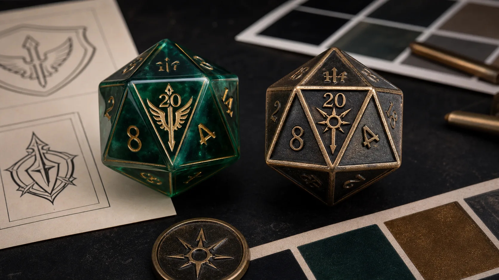

Custom DND dice can look simple from the outside: choose a color, put a logo on the d20, select a box, and place the order. In real production, each of those choices changes cost, sample timing, MOQ, packaging fit, and how the final product feels in a buyer's hand. A custom DND dice set for a game store should not be specified the same way as a Kickstarter collector reward. A custom metal DND dice project should not be quoted like a lightweight resin assortment. A custom engraved DND dice face should be checked for readability before bulk production begins.
This guide explains how to plan a custom DND dice project from a buyer's point of view. It covers materials, logo and symbol decisions, custom d20 faces, full custom dice sets, packaging choices, MOQ planning, sample kit review, and the exact information that makes a quote faster and more accurate. The goal is not to push one material or one packaging format. The goal is to help RPG publishers, Kickstarter creators, dice brands, distributors, and game stores choose a specification that can actually be manufactured, shipped, photographed, and sold.
Custom DND dice: the quick answer
For most B2B buyers, the safest custom DND dice project is a 7-piece polyhedral dice set with a clear theme, readable numbers, one custom logo or symbol on the d20 high face, and packaging selected before the final quote. Resin or acrylic-style dice work well for broader wholesale assortments. Sharp edge resin works for premium collector sets. Metal dice work for higher-value gifts, deluxe rewards, and private label lines where weight and packaging are planned correctly.
If the project is still early, start with a sample kit and catalog shortlist. Compare resin dice, sharp edge resin dice, metal dice, oversized d20 dice, and packaging options in person before choosing a final direction. If the project already has artwork, send the logo, symbol, color references, target quantity, packaging preference, delivery country, and launch date with the quote request. A clear brief is usually more useful than asking for a generic "custom DND dice price."
1. Start with the buyer type and use case
The same custom dice can serve very different commercial goals. A game store may need a reliable reorder assortment. A Kickstarter creator may need a limited reward that photographs well. A publisher may want custom logo dice bundled with a new sourcebook. A dice brand may want private label packaging and a consistent product line. A subscription box may need a compact custom DND dice bag or single d20 that fits a monthly theme.
| Buyer type | Best custom dice direction | Decision to confirm first |
|---|---|---|
| RPG publisher | Custom DND dice set with logo d20 and book-themed color palette | Whether the dice ship with a book, box set, or separate retail SKU |
| Kickstarter creator | Custom dice DND reward, stretch goal, or add-on with sample approval | MOQ, pledge forecast, packaging weight, and delivery timeline |
| Dice brand | Private label dice line with custom dice box, inserts, and repeatable SKUs | Packaging MOQ and reorder plan |
| Game store or distributor | Mixed wholesale dice assortment with selected custom styles | Retail price point, display format, and replenishment quantity |
| Event or subscription box | Single custom d20, custom DND dice bag, tray, or compact gift set | Fast packing, size limit, and per-unit landed cost |
This first decision keeps the project practical. A buyer who needs a retail display should think about barcode space and shelf presence. A buyer who needs a backer reward should think about fulfillment weight and campaign promises. A buyer who wants custom engraved DND dice should first confirm whether the artwork can stay readable at dice-face size.
2. Choose the right custom DND dice material
Material is the foundation of the project. It affects visual style, hand feel, production method, packaging strength, shipping cost, and sample review. The most common B2B options include resin dice, sharp edge resin dice, metal dice, hollow metal dice, liquid core dice, acrylic-style dice, oversized d20 dice, and specialty dice with inclusions or themed effects.
Resin dice are flexible for custom colors, swirls, glitter, translucent effects, class themes, dragon themes, elemental themes, and campaign-specific palettes. They work well for custom DND dice sets because they can be distinctive without becoming too heavy. Resin is often a good starting point for Kickstarter creators, game stores, and dice brands testing a new theme.
Sharp edge resin dice are more premium. They photograph well, show crisp geometry, and appeal to collectors. They need more careful sample approval because edge quality, polish, bubbles, inclusions, and number fill can make or break the final presentation. If the buyer wants a deluxe custom DND dice set, sharp edge resin is usually worth comparing against standard resin in a sample kit.
Metal dice are strong for premium gifts, dark fantasy lines, dragon dice, limited Kickstarter tiers, and private label collector products. Custom metal DND dice feel substantial, but the weight changes packaging and freight assumptions. A metal dice set in a weak box can damage itself in transit. A well-designed metal set in a tin, magnetic box, or fitted foam insert can feel much more valuable.
Liquid core and specialty dice create visual movement and novelty. They can support magic, potion, celestial, arcane, or elemental themes. They also require careful sample review because the liquid effect, clarity, number readability, and face consistency must be checked in real light, not only in a mockup.
3. Plan the logo, custom d20 face, or symbol before tooling
The d20 is usually the first face buyers want to customize. A custom logo on the 20 face is practical because it gives the set a brand identity without changing every die face. It works for RPG publishers, Kickstarter campaigns, game stores, convention gifts, and private label dice brands. However, the logo must be simple enough to survive production.
Thin lines, tiny letters, complex gradients, and detailed illustrations can lose clarity when engraved, printed, painted, or color filled. A strong custom DND dice symbol should be readable from normal tabletop distance. If a buyer's main logo is too complex, create a simplified icon version for the d20 face and keep the full logo for packaging.
Common symbol ideas include a dragon eye, rune mark, spell circle, guild crest, skull, sword, shield, moon, faction symbol, class icon, or publisher mark. The important point is that the symbol should not rely on protected official artwork. Use original marks, licensed artwork, or generic fantasy motifs that the buyer has the right to use.

4. Decide between a full custom dice set, d20-only order, or themed assortment
A standard custom DND dice set usually includes seven polyhedral dice: d4, d6, d8, d10, percentile d10, d12, and d20. This format is familiar to players and works well for retail, campaign rewards, and RPG publisher bundles. If the buyer wants a complete product, a custom DND dice set is often easier to sell than one custom die.
A d20-only project can still make sense. Single custom d20 dice are useful for event giveaways, convention promotions, boxed game upgrades, class tokens, GM gifts, subscription boxes, and affordable branded inserts. Oversized d20 dice can work as a collector item, display piece, or premium stretch goal. These formats need separate planning because their packaging, MOQ, and perceived value are different from a full set.
A themed assortment is another option. Instead of one fully custom design, a buyer may choose several catalog-inspired styles and customize the packaging, labels, or SKU mix. This can be practical for game stores and early-stage dice brands because it reduces product development risk while still creating a branded buyer experience.
5. Choose packaging as part of the product, not after the dice
Packaging affects the perceived value, fulfillment cost, damage rate, storage space, and reorder workflow. Buyers often focus on the dice first and packaging later, but packaging can change the quote as much as the material. A custom DND dice box, dice bag, dice tray, tin, magnetic gift box, printed retail box, or display carton can each create a different product position.
Dice bags are compact, economical, and useful for large assortments or subscription boxes. A custom DND dice bag can carry a logo while keeping shipping weight low. It is less protective than a rigid box, so it works best when dice are shipped inside another carton or when the buyer accepts a simple presentation.
Tin boxes and small rigid boxes protect dice better and raise perceived value. They are common for metal dice and premium resin sets. Magnetic boxes and fitted foam inserts create a stronger gift experience. They are useful for collector lines, Kickstarter deluxe tiers, and private label dice brands. Printed retail boxes support game store sales because they can include product names, SKU codes, barcode space, and consistent shelf presentation.
Dice trays are usually not part of every custom dice order, but a custom DND dice tray can work as a premium add-on, event gift, or RPG publisher bundle. If trays are included, quote them separately from dice because material, size, packing, and freight requirements are different.

6. Understand MOQ before promising a launch date
MOQ is not a single universal number. It changes by material, production method, logo method, color fill, packaging, artwork complexity, and order format. A catalog-based dice style with private label packaging may have a different MOQ from a fully custom color, custom d20 face, and printed retail box. A custom metal DND dice project may have different tooling and finishing requirements from a resin project.
Buyers should ask about dice MOQ and packaging MOQ separately. The MOQ for the dice might be lower than the MOQ for a printed box. The MOQ for a custom DND dice bag might be different again. If the buyer is planning a Kickstarter campaign, the quote should include a base case, target case, and stretch case. That allows the campaign team to know what happens if they need 100 sets, 300 sets, 1,000 sets, or a larger reorder.
MOQ also affects product strategy. If a buyer cannot reach the MOQ for a fully custom dice set, they may start with sample kits, catalog styles, custom packaging, or a d20-only project. If a buyer can reach higher quantities, deeper customization becomes easier to justify. The right approach is not always the most custom option. It is the option that fits the buyer's real demand, cash flow, and launch timing.
7. Use sample approval to reduce production risk
A sample kit or pre-production sample helps buyers check things that are difficult to judge from digital mockups. These include number readability, weight, edge finish, color fill, logo clarity, surface polish, transparency, inclusions, box fit, and how the dice photograph under normal light. This is especially important for custom engraved DND dice, sharp edge resin, liquid core dice, and custom metal dice.
When reviewing samples, do not look only at the front-facing product photo. Roll the dice in hand, check the numbers from different angles, test the packaging closure, compare color under warm and cool light, and photograph the dice with a phone. If the product is for retail or crowdfunding, the buyer should ask whether the sample quality and bulk production method are aligned. A sample that looks beautiful but cannot be repeated at scale does not solve the buyer's problem.
Sample approval should create a record: approved material, approved color, number fill, logo file, packaging file, packaging structure, quantity, carton packing assumption, and delivery country. This record helps with reorders and reduces misunderstandings when the buyer expands into additional custom DND dice sets.
8. Send a complete custom DND dice quote checklist
The fastest way to get a useful quote is to send a structured brief. A supplier can respond more accurately when the buyer explains the product format, quantity, packaging, and business use case. The checklist below is suitable for RPG publishers, Kickstarter creators, dice brands, game stores, distributors, and event teams.
- Buyer type: RPG publisher, Kickstarter creator, dice brand, game store, distributor, event team, or subscription box.
- Product format: custom DND dice set, d20-only order, oversized d20, custom metal DND dice, mixed catalog assortment, dice bag, dice tray, or packaged gift set.
- Material preference: resin, sharp edge resin, metal, hollow metal, liquid core, acrylic-style, oversized d20, or specialty dice.
- Logo and artwork: vector logo, simplified symbol, custom d20 face, number font, number fill color, and packaging artwork if available.
- Quantity target: sample kit, pre-production sample, 100 sets, 300 sets, 1,000+ sets, or campaign-dependent range.
- Packaging type: velvet bag, tin box, magnetic box, printed retail box, display carton, tray, insert card, barcode label, or private label packaging.
- Commercial use: retail shelf, Kickstarter reward, RPG book bundle, convention giveaway, subscription box, private label brand, or distributor catalog.
- Delivery details: destination country, target launch date, expected delivery window, and whether the buyer uses a freight forwarder.
If the buyer has not finalized the design, it is still useful to send reference images and explain which details are fixed and which are flexible. For example, the buyer may require a black and gold custom DND dice set but be flexible on resin type, box structure, or number font. That gives the supplier room to suggest a practical path instead of guessing.
9. How to evaluate suppliers for custom dice DND projects
A good custom dice supplier should be able to discuss material limits, logo readability, packaging MOQ, sample timing, and quote assumptions clearly. The cheapest quote is not always the lowest risk. Buyers should compare whether the supplier asks practical questions, shows real product categories, understands packaging, and can explain how sample approval connects to bulk production.
For B2B buyers, communication matters. If the supplier understands buyer type, launch date, quantity range, delivery country, and packaging format, the project usually moves faster. If the supplier only answers with a single price and no questions about material, logo, or packaging, the buyer may not have enough information to plan margins, freight, or launch timing.
Custom DND dice FAQ
What are custom DND dice?
Custom DND dice are tabletop RPG dice made with buyer-selected material, color, number fill, logo face, symbol, packaging, or private label branding. They can be full polyhedral dice sets, d20-only products, oversized d20 dice, metal dice, resin dice, or themed wholesale assortments.
Can I customize only the d20 face?
Yes. A custom d20 high face is one of the most practical options because it creates brand identity without changing every die. Use simple vector artwork and check sample readability before bulk production.
What is the best material for custom DND dice sets?
Resin is flexible for broad themes and wholesale assortments. Sharp edge resin is stronger for premium collector sets. Metal dice work for high-value gifts and deluxe rewards. Liquid core and specialty dice work when the visual effect is part of the selling story.
Can packaging be customized?
Yes. Buyers can request custom DND dice boxes, dice bags, tins, magnetic boxes, display cartons, tray options, insert cards, and private label packaging. Packaging should be quoted early because it can have a separate MOQ.
Why does MOQ vary so much?
MOQ depends on material, customization depth, logo method, color fill, tooling, packaging, artwork, and order format. A catalog-style dice set with custom packaging can have a different MOQ from a fully custom dice and box project.
Should Kickstarter creators order samples before launch?
When custom dice are part of the reward promise, samples are strongly recommended before final campaign assets or bulk production. Samples help confirm color, finish, logo clarity, number readability, packaging fit, and photography quality.
Continue planning your custom dice project.
Custom RPG Dice
Review custom polyhedral dice options for RPG publishers, dice brands, and campaign creators.
Custom DND Dice Page
Compare custom DND dice set options, buyer scenarios, and sourcing paths for B2B projects.
Custom Dice Packaging
Compare bags, tins, magnetic boxes, printed boxes, display cartons, trays, and private label packaging.
Kickstarter RPG Campaigns
Plan dice rewards, sample kits, MOQ, launch timing, and packaging for crowdfunding projects.
Wholesale Dice Catalog
Download catalog files and shortlist dice styles before requesting a quote.
Sample Kit & Catalog Request
Request sample kit options and catalog files before choosing materials and packaging.
Send your custom DND dice brief for a practical quote.
Share your material preference, logo or symbol file, target quantity, packaging format, delivery country, and launch date. We can help compare resin, sharp edge resin, metal dice, custom d20 faces, private label packaging, and sample kit options.
Final recommendation
Start with the commercial use case, then choose the material, logo method, set format, packaging, and MOQ path. A good custom DND dice project does not need to be complicated. It needs a clear buyer brief, readable artwork, realistic quantity planning, sample approval, and packaging that fits the way the product will be sold or delivered. When those pieces are aligned, custom dice become easier to quote, easier to produce, and easier for buyers to trust.